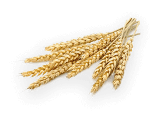
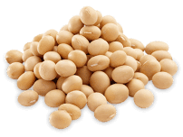
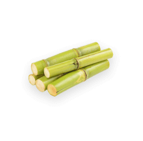
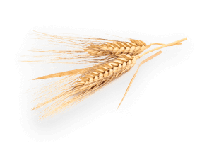

EzyFarm
Home
About
Diseases
Blog
Contact Us
Grow More,Grow Better With EzyFarming!
One platform learn smart farming and agribusiness information.
Increase Yields with EzyFarming
Contact Us
Corn
Corn (maize) is a popular grain, fodder, and industrial crop characterized by versatility and high yield.
Sunflower
Sunflowers can grow on a wide range of soils. Primary uses are: cooking oil, bird feed, and edible seeds
Oats
Rich in vitamins, fats, and starch. For millennia, it’s been successfully used for medicinal and dietary purposes.

Barley
Barley is cheap and easy to grow, is used as animal fodder and an active ingredient in different health food types, brewing, even coffee.

Soybeans
Soy is an incredibly versatile product used in various industries (from animal feed to pharmaceuticals).
Cotton
Cotton is widely bred for fiber and seeds. It is used to produce fabrics, threads, oil, and more.
Sorgo
Low production cost makes Sorghum a popular grain for the food and alcohol industries.

Sugarcane
Sugar cane juice contains sucrose, dextrose, and fructose.
Rapeseed
Canola (rapeseed) is a widespread oilseed, grown for oil, healthy products, and feed for cattle.
Flax
Flax seed is highly valued for oil in medical and technical industries.

Rye
Rye is a cereal grass, grown as a cover crop and forage crop. Its grain goes into flour, bread, crispbread, alcoholic beverages (beer, whiskey, vodka).
Wheat
The number one crop by production and consumption in the world, coming in thousands varieties.